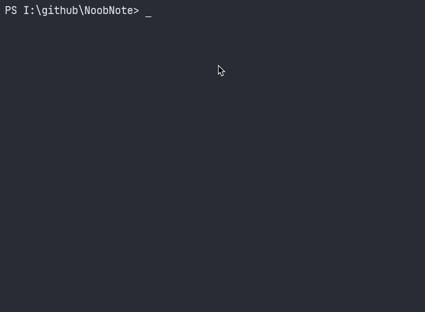

About
NoobNote is a Simple Notepad which is written purely in python. NoobNote offers a simple and intuitve interface which is ideal for Writers and BrainStroming Sessions. Every Flavour of NoobNote comes as a python file which can be launched from the terminal or a direct executable which is included in the zip file.
Philosophy
There are many alternatives to Microsoft Notepad and the best one out there in my opinion is Notepad++, but there are no alternatives to Notepad which actually look and feel like it. NoobNote aims to replace that. NoobNote has many features like a runner, find function, a terminal, code runner, settings gui, all of this while maintaining that Notepad nostalgia. NoobNote comes in Three Forms, NoobNote-Lite for beginners, NoobNote-Dev for Normal Users and NoobNote is just vanilla. NoobNote is available across many platforms, since as long your platform supports python, you can 'pip install noobnote' and use it. NoobNote comes as a handy .exe for windows are is frequently updated. Very usefull, nice to use and just overall works. NoobNote is surely worth a try.
NoobNote and it's Flavours
NoobNote is not in it's self everything. NoobNote is just a base model on top of which, if you know a little python, can add any number of features you want. NoobNote is current in v.1.1, the most stable version. Whereas the falvours of NoobNote, namely DevNote and LiteNote are currently in v.3.1. All the Features talked below are only applicable to NoobNote derivatives that I developed, namely DevNote and LiteNote, but not NoobNote in itself. To know more about this, go here.
Installation and Usage
NoobNote and all it's derivatives are written in python using the tkinter module. NoobNote does come with binaries which are kindly provided by shadowguy. Vanilla NoobNote can also be downloaded using pip install. NoobNote can instead also be well normally used as a python script as shown below, but if you don't like the terminal, you are recommended to use the binaries provided for Windowsx86 and Windowsx64. If you are on Linux or Macos, you can contribute by building them on your platform and informing me. However for now, if you are on Linux or Macos, you can use the raw python script or compile it for your platform, however, if you do, inform me so I can link you binary for others to use.

Building and Compiling
Building and Compiing NoobNote is fairly easy, There are many ways to compile a python script, as NoobNote is written in python, you can use any of these popular services to compile it into a binary for your platform. You can use any of these services pyinstaller, nuitka, winpython
Steps to compile
Clone the github repository
git clone https://github.com/newtoallofthis123/NoobNote.git
pyinstaller -w - i "icon.ico" -n "NoobNote"
python -m nuitka --standalone --windows-disable-console --windows-icon-from-ico="icon.ico" --windows-company-name="NoobScience" --windows-product-name="NoobNote" --windows-file-version=0.1 --windows-product-version=0.1 --windows-file-description="My Take on NotePad" --plugin-enable=tk-inter --python-arch="x86" NoobNote.py
License and Attribution
NoobNote and all it's flavours are registered under the MIT License, hence you are free to use it as you like and in any sort of software you are making, either open or closed source, but I am not responsible for your product. If you do use NoobNote in your product, it would be very kind of you to attribute my name and my website on your 3rd party software page. You however are not required to. If you want to support me, see contribute. Hope you enjoy using NoobNote.
Contribute
If you like NoobNote and my work, be sure to leave star on my Github page or subscribe to my YouTube Channel. If you want to contribute towards NoobNote's development, contact me or fork NoobNote and send me a pull request.